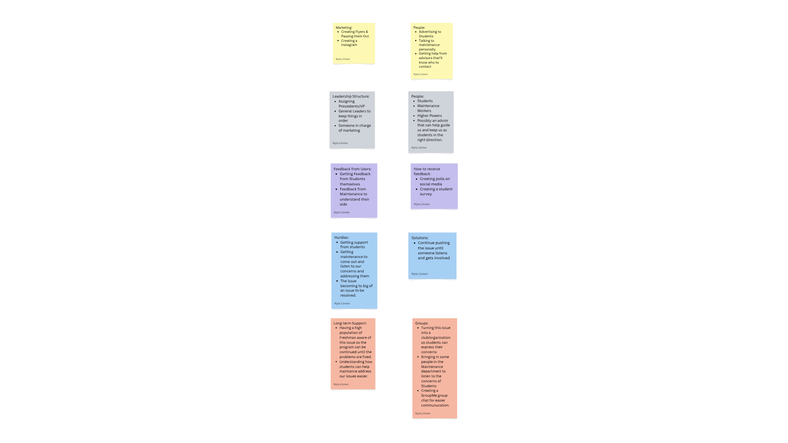

Highlighted projects
Problem Statement

Dorm residents often face delays in repairs due to unclear maintenance reporting and contact procedures.
Affinity Diagram
Diagram for the maintenance issue I plan to present.
Sketches
 The sketches show a college student trying to find
an easier way to contact maintenance, and along the way,
they discover a way to be part of the cause.
The sketches show a college student trying to find
an easier way to contact maintenance, and along the way,
they discover a way to be part of the cause.
Algorithmic Design Final Project
Code from Java in Algorithmic Design